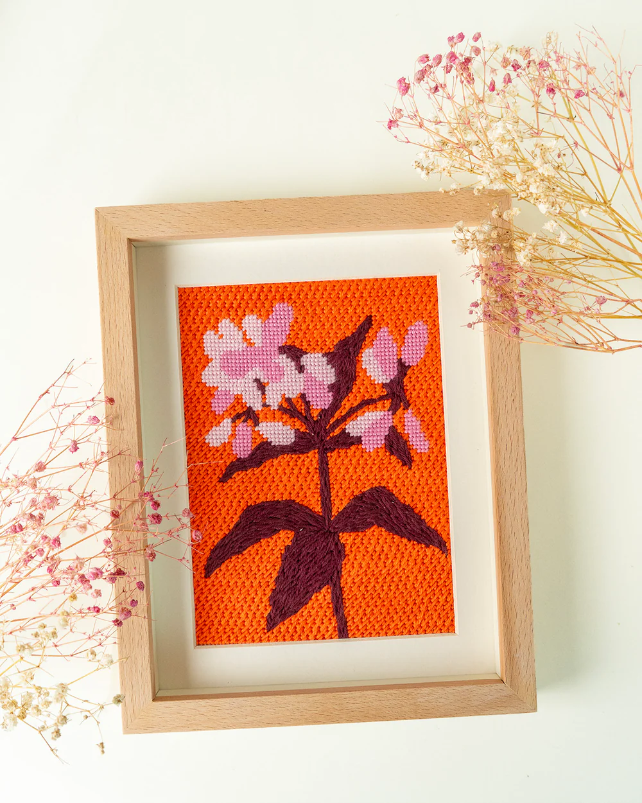
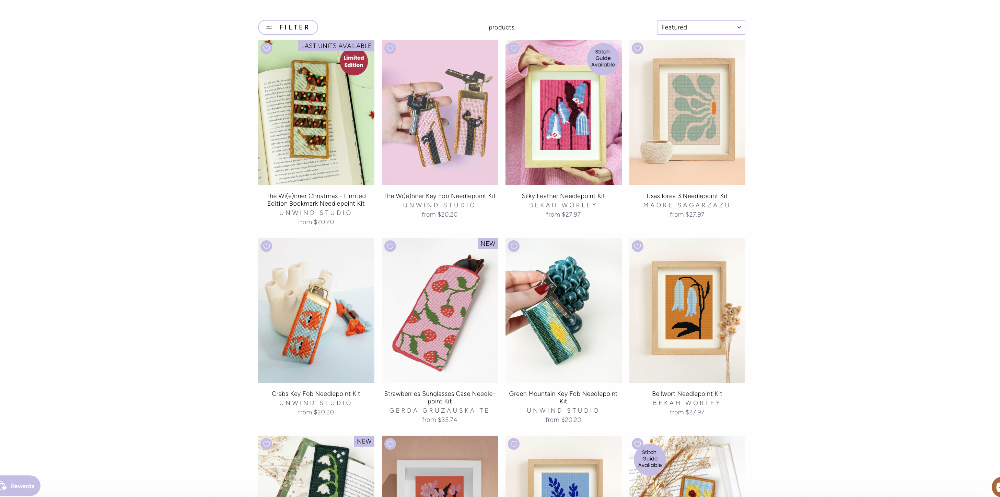
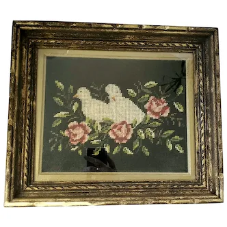

|
 |
 |
 |
Needlepoint lives in the creativite space where tradition and rebellion intertwine, stitch by stitch. Often dismissed as quaint or antiquated, needlepoint has been reclaimed by a new generation of makers who treat it not as a relic, but as a living, evolving language. This subculture thrives on contradiction: softness paired with sharp commentary, domestic craft reimagined to fit into the modern world.
Needlepoint is all about intention. Every stitch demands presence, a focus that feels increasingly rare in this new age of technology. In a culture obsessed with immediacy and mass production, needlepoint insists on time and hours spent building something tactile and human. In every piece you can see the hand of the maker whether it is in a tiny stich mistake or even a spelling error.
There is also a reclamation running through the subculture. Techniques once associated with domesticity and often feminized labor are being reinterpreted as tools for expression and critique. Makers are stiching not just pretty pictures but funny and modern phrases and images that challenge social norms and leave a disruption in a craft that is known to be out together and womely. This leads to needlepoint becoming more than decoration,it becomes voice.
Community plays a vital role here. While the act itself is solitary, the subculture is deeply connected. Artists share patterns, swap ideas, and build networks that stretch across both physical and digital spaces. Tik tok being a large place this connection is happening. There is a sense of continuity of learning from the past while reshaping it for the present. Making the craft archivel and experimental all at the same time.
It is a space for exploration, for honoring the slow and the handmade while pushing against expectations of what needlepoint can be. The theme of quiet defiance: choosing to create carefully in a careless world, to value process over speed, and to recognize that even the smallest stitch can carry meaning holds true in this craft.